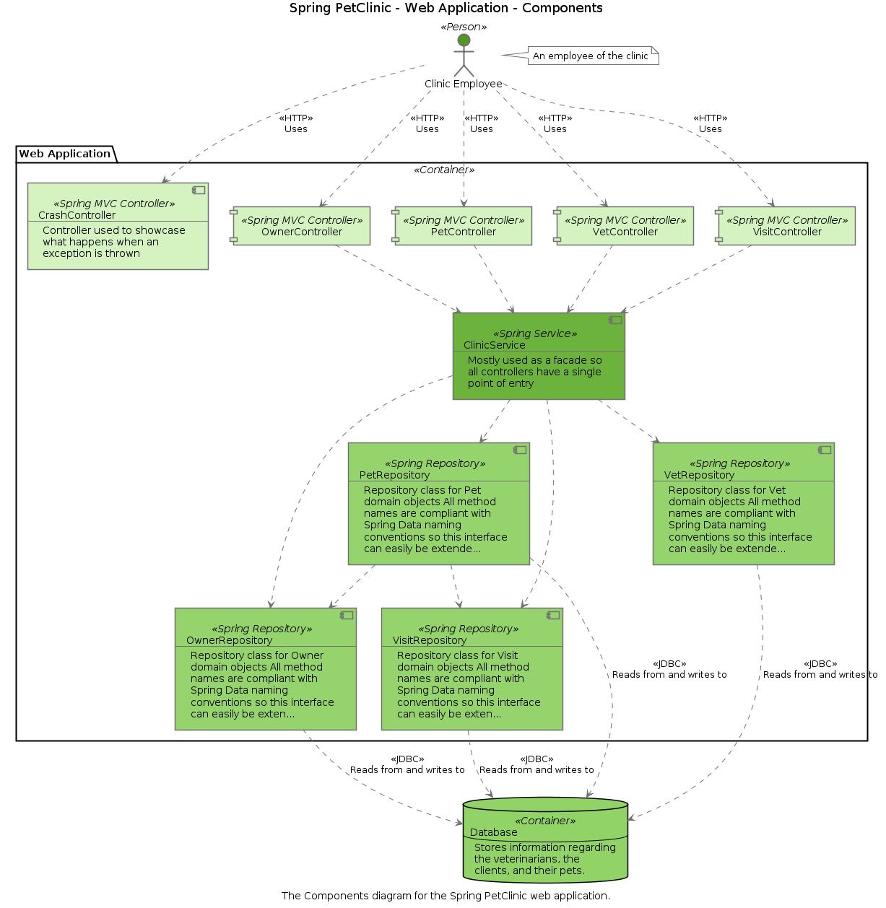

Diagrams as code
Structurizr ... diagrams as code

Diagrams as code
C4 model diagrams as code with Structurizr
Code - an executable architecture description language
There has been a trend over the past few years towards text-based tooling, with the most popular examples including PlantUML, WebSequenceDiagrams and Mermaid. With these tools, the diagram source is provided as text using a special domain-specific language, which the tool then visualises, typically with an automatic layout algorithm.
These tools generally have a low barrier to entry, and the source text is easily version controlled. Also, it's relatively straightforward to automate the use of these tools in order to generate diagrams and documentation during your build process.
However, each diagram needs to be defined separately, typically in a separate text file. If you have the same element on two diagrams, and you want to change the name of that element, you need to make sure that you change the name everywhere it's used. The global search and replace features in most developer tooling does make this less of a problem, but it's just one way that a collection of diagrams can easily become inconsistent if not managed properly.
When you think about it, code is just text, and another type of domain-specific language. The open source Structurizr client libraries allow you to create your software architecture model, and associated documentation, via code. For example, using Java:
public static void main(String[] args) throws Exception {
Workspace workspace = new Workspace("Getting Started", "This is a model of my software system.");
Model model = workspace.getModel();
Person user = model.addPerson("User", "A user of my software system.");
SoftwareSystem softwareSystem = model.addSoftwareSystem("Software System", "My software system.");
user.uses(softwareSystem, "Uses");
ViewSet viewSet = workspace.getViews();
SystemContextView contextView = viewSet.createSystemContextView(softwareSystem, "SystemContext", "An example of a System Context diagram.");
contextView.addAllSoftwareSystems();
contextView.addAllPeople();
Styles styles = viewSet.getConfiguration().getStyles();
styles.addElementStyle(Tags.SOFTWARE_SYSTEM).background("#1168bd").color("#ffffff");
styles.addElementStyle(Tags.PERSON).background("#08427b").color("#ffffff").shape(Shape.Person);
StructurizrClient structurizrClient = new StructurizrClient("key", "secret");
structurizrClient.putWorkspace(25441, workspace);
}This program creates a model containing elements and relationships, creates a single view, adds some styling, and uploads it to the Structurizr cloud service via the JSON-based web API. Here's the resulting diagram when you open it in Structurizr, where the layout of the diagrams can be modified.


This code, which was used to create the software architecture model, can be thought of as an executable domain specific language, or an executable architecture description language.
Although using code to create simple diagrams might seem verbose when compared to static text-based approaches, the real power becomes evident when you start to think in terms of creating a model of your software system, rather than a disconnected collection of static diagrams. Also, using code provides a number of unique opportunities over using a static textual description.
For example, rather than manually specifying which elements should be shown in a view, it's easy to do things like create a system context diagram for a software system, where only the immediately related elements are added. For example (with Java):
SystemContextView view = views.createSystemContextView(softwareSystem, "SystemContext", "...");
view.addNearestNeighbours(softwareSystem);Software architecture diagrams as code
With static text-based approaches (e.g. textual DSLs, JSON, YAML, etc), you would likely need to manually create each and every element, relationship, and diagram. With code, you can programmatically manipulate the model and views using the power of your programming language.
Benefits of using code to create software architecture models
Multiple output formats
Rather than argue over which diagramming tool you're going to use, why not use them all? A huge benefit of creating software architecture models as code is that you can visualise the views in that model using multiple output formats. For example, here are four versions of the same view, each created from the same code, and rendered in different diagramming tools.
Graphviz
PlantUML
Other benefits
Other benefits of using code to create software architecture models include:
- Code is familiar: Code is familiar to us as software developers, so let's take advantage of this rather than creating another language with which to represent a software architecture model.
- Flexibility for creating models: In addition to manually writing code to create a software architecture model, we can also write code to extract architectural concepts (e.g. components) from our production codebase using techniques such as reflection, introspection and static analysis.
- Flexibility for visualising models: Writing code to create the views of a software architecture model provides you with the ability to slice and dice the model as needed. For example, showing all components for a large system will result in a very cluttered diagram. Instead, you can simply write some code to programmatically create a number of smaller, simpler diagrams; perhaps one per vertical slice, web controller, user story, etc. You can also opt to include or exclude any elements as necessary.
- Versionable: Since the models are code, they are also versionable alongside your codebase in your version control system.
- Living documentation: The code to generate the model can be integrated with your automated build system to keep your models up to date; providing accurate, up-to-date, living software architecture diagrams that actually reflect the code.
Use cases
The Structurizr client libraries include a number of classes that allow you create the elements that you need to describe your software architecture with the C4 model (people, software systems, containers and components), along with methods/functions to create relationships between elements. You can either create your software architecture models manually like the example above, or:
- Use reflection and static analysis techniques to "extract" components from your production codebase, based upon naming conventions or machine readable metadata (e.g. Java Annotations, C# Attributes, etc).
- Parse log files or observability data to create a model of your distributed/microservices architecture.
- Parse CloudFormation or Terraform scripts to create a model of your distributed/microservices architecture.
- Extract the dependency graph from your central application/service register to create a model of your system landscape.
- Parse software architecture model definitions from other tools.
- Parse software architecture model definitions from other formats (e.g. plain text, YAML, XML, etc).
Some of these features are available out of the box with some of the client library implementations, others you will need to build yourself.
Implementations
The following implementations support the core concepts, and are all compatible with the Structurizr web API via an intermediary JSON format.